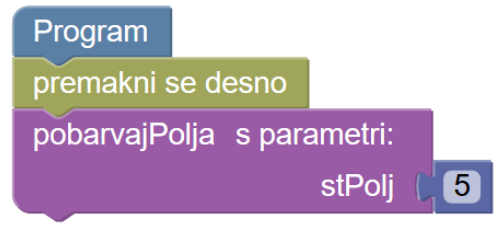
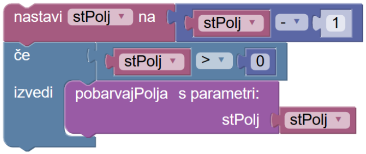

Rekurzija


Napiši zmajčku navodilo po katerem bo pobarval vsa označena polja.
Ker nočeš prekoračiti dovoljenega števila blokov, uporabi rekurzivno funkcijo. Rekurzivno funkcijo ustvarimo podobno kot navadno funkcijo. V rekurzivni funkciji pokličemo isto funkcijo, ki jo ustvarjamo. V navadni funkciji ne pokličemo funkcije, ki jo ustvarjamo. Navodilo funkcije se pri rekurzivni funkciji ponavlja.
Rekurzivno funkcijo ustvari s parametrom. Ime parametra je lahko na primer stPolj. V programu pokličemo funkcijo s parametrom tako, da ji pripnemo število ali spremenljivko, ki bo parameter funkcije. Primer klicanja funkcije s parametrom je ilustriran na spodnji sliki:
V tej verziji naloge bo parameter funkcije število označenih polj, ki so pred Piškom v skupini. Prva skupina polj je dolga 5 polj, zato bo prvič rekurzivna funkcija poklicana s parametrom: število 5, naslednjič s parametrom: število 4, in tako naprej. Namesto, da pri vsakem klicu funkcije uporabimo nov parameter, ustvarimo spremenljivko stPolj, ki ji bomo odšteli število 1 pred vsakim klicem funkcije. Taka rekurzivna funkcija je ilustrirana spodaj:

V rekurzivni funkciji moramo sestaviti pogoj, zato da se klicanje funkcije enkrat ustavi. Najmanjše število označenih polj v skupini je zmeraj večje od nič, zato bo naš pogoj preveril, ali je spremenljivka stPolj večja od nič. Ko pogoju ne bo več zadoščeno, to je takrat, ko bo spremenljivka stPolj manjša kot 1, ne bomo več ponovili koraka rekurzivnega klica funkcije. Primer klica funkcije s tem pogojem je na sliki:
Zapomni si: Med zaporednima skupinama označenih polj je 1 belo polje.
Zmajček naj nariše smreko z uporabo rekurzivne funkcije.
Za parameter funkcije si izberemo spremenljivko, na primer dolzinaVeje. Veja dve vrstice nad prejšnjo ima dolžino manjšo za 1.
Uporabi pogoj s katerim preveriš, kdaj se klicanje funkcije znotraj navodila funkcije konča.
Zapomni si: Dolžina veje na eni strani od polja na sredini vrstice je v spodnji vrstici enaka 6 polj.
Zmajček naj nariše vzorec kvadratov z uporabo rekurzivne funkcije.
Uporabi preverjanje pogoja, da se ponovni klic funkcije ne bo nadaljeval v neskončnost. Preveri ali je spremenljivka dolzinaStranice večja ali enaka najmanjši dolžini stranice kvadrata.
Zapomni si: Največji kvadrat ima dolžino stranice enako 11 polj, najmanjši kvadrat ima dolžino stranice enako 3 polja.